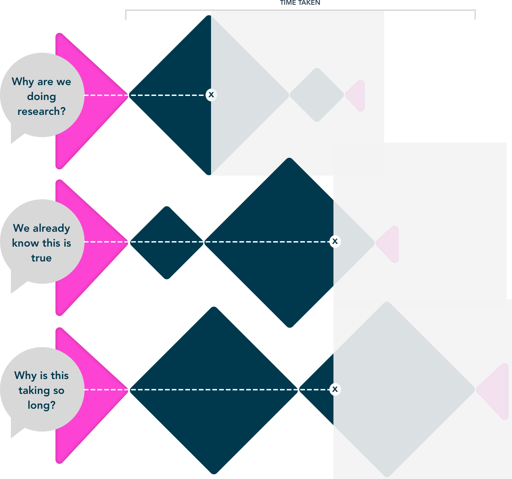
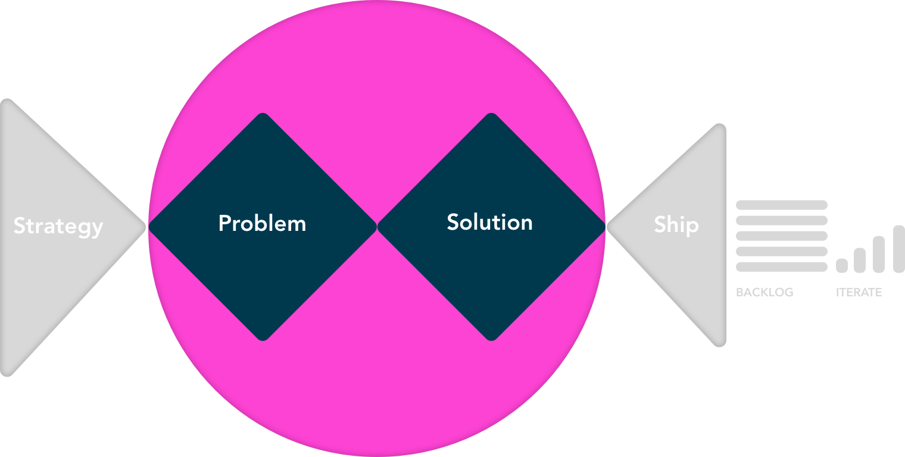

DIETDesign Impact Evaluation Tactic
What is DIET?
DIET (Design Impact Evaluation Tactic) helps visualise the potential for design to make an impact using score to understand.
What can DIET help with?
- If we can move to the next phase
- If we should be putting designers on it
- Confidence level in in-flight work
- Help designers understand why the work is/isn’t going well
DIET has 3 scoring stages
- 1. StrategyWhen you first hear about the project
- 2. ProblemOnce you have completed your research
- 3. SolutionWhen you have designed and tested
What is the theory behind DIET?
DIET is based on the Double Diamond which is the name of a design process model developed by the British Design Council in 2005.
The Design Council discovered designers across disciplines share strikingly similar approaches to the creative process, which they mapped out as ‘the Double Diamond’.
Applying the double diamond to our projects
The projects we'd mapped out followed the pattern of the Double Diamond.

Projects followed different paths which seemed to be based on unknown business needs or the make up of the team. However the outcome was often different, projects pivoted, got ditched or evolved. Despite similar methods being used. Why was this? How could we see these patterns across multiple teams and projects?
Title
Text

Title
Text

Title
Text

Title
Text

Title
Title